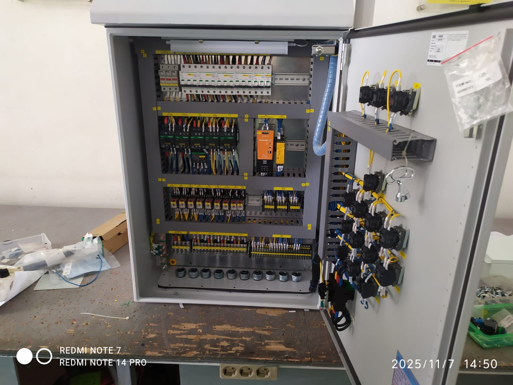

Company Overview
CV. Yudhistira Mandala Teknik adalah perusahaan jasa konstruksi, mekanikal, elektrikal, dan sipil yang berbasis di Bekasi. Didirikan pada 30 Juni 1993, kami telah melayani berbagai klien mulai dari sektor perbankan, industri, pendidikan, hingga infrastruktur publik selama lebih dari 30 tahun.
Dibawah kepemimpinan Bapak Kolaga Eri Sudewo, kami mengedepankan profesionalisme dan kualitas dalam setiap pekerjaan. Keahlian kami mencakup fabrikasi baja berat, sistem otomasi industri, dan pengembangan infrastruktur sipil di berbagai wilayah Indonesia.
Core Services

HEAVY STEEL CONSTRUCTION

ELECTRICAL & AUTOMATION